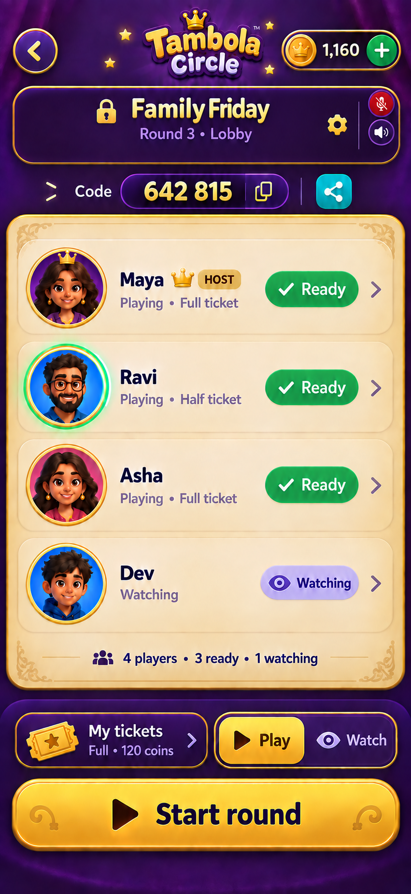
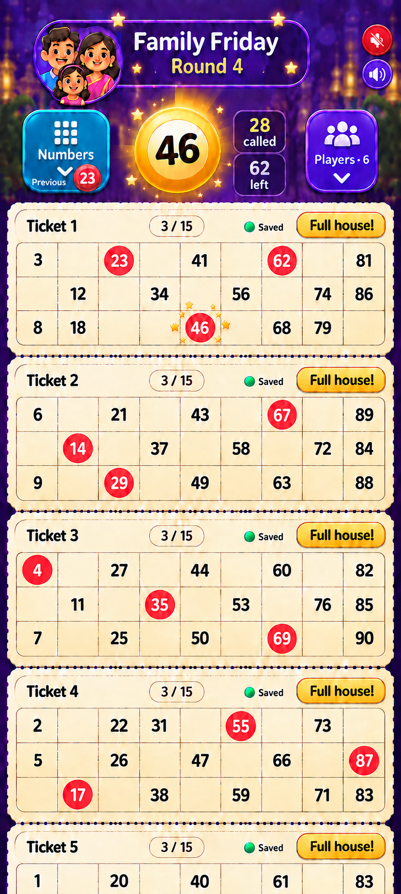

Game V4 · Simple audio toggles
One small mic and one small speaker. Tap either to toggle muted/unmuted
directly. No overlay, picker or menu. Design proposal; voice chat is not
yet implemented.
Review and implementation plan ·
Image prompts

Table lobby

Live game
Mic defaults muted. Unmute lets everyone listening at the table hear you.
Speaker mutes/unmutes all incoming voice and number announcements,
restoring saved levels. Both controls are independent.